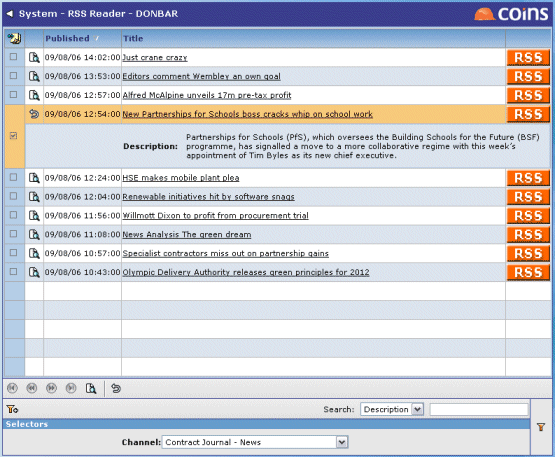

RSS Feeds
RSS lets you display up-to-date information (such as news articles), published by different websites, in a single place. This means that you do not have to visit each individual website to see if new information is available.
What does RSS mean?There are various explanations for what the initials RSS stand for: RDF Site Summary, Rich Site Summary, or Really Simple Syndication. Each information source is known as a channel or a feed.
provides an RSS reader that displays the latest feeds from the sources you select. You can also display RSS feeds on the home pages.
A background routine in updates the listings regularly.
To select the RSS channels you are interested in:
- Go to Users.
- Open your user record.
- Click the Preferences tab.
The RSS Channels field lists the channels your system has subscribed to. the channels you are interested in. (If you do not select any channels, you will see all channels in RSS Reader, but none on the home pages.)
- Save the user record.
To display RSS feeds:
- Go to RSS Reader.

The Channel selector shows the channels that have been set up on your system. You can select the feeds from a single channel, or set the selector to All.
The browse shows the title or headline of the article, and an image to show the channel (or source of the article).
- To show a summary of the article, click the
 button.
button.
- To read the full article, click the link in the title column; this will display the article from the relevant website, in a new window.
RSS feeds - configuration
In order to make RSS channels available to your users you must subscribe to them; this just means you say which data sources you want the update routine to get information from.
To subscribe to RSS channels:
Use RSS Channels to add a record for each of the channels you want to subscribe to.
Each user can then select which channels they are interested in from the channels you have subscribed to.
Until the Load RSS Feeds program runs for the first time after you add a new channel, references to that channel (for example, the name on the Channel selector in RSS Reader or the User Preferences tab, and the logo) will be blank.
Updating the RSS data:
The Load RSS Feeds program (syu9000.p) runs the WebServices and updates the data files. You need to set up a cron job to run this regularly (for example, every 30 minutes during the working day). This must be run in background via a shell script rss.sh (not directly from, because doing so would corrupt the code page conversion).